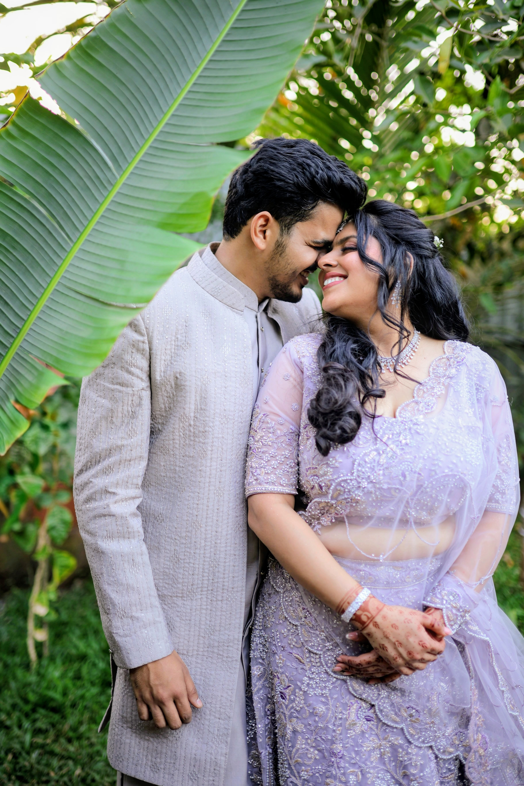
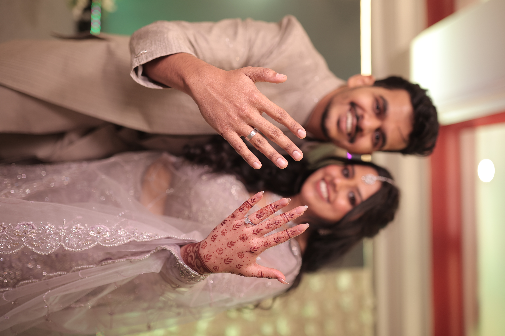
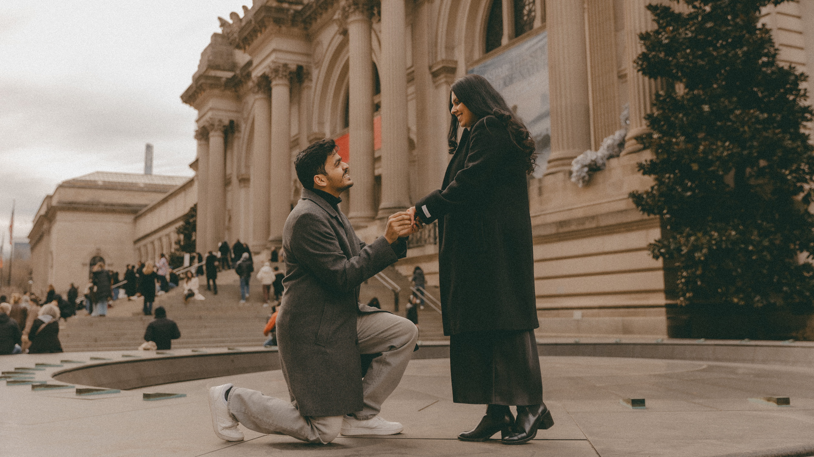

In Their Own Words
Our Story हमारी कहानी




A few of the moments along the way — from the first hello to saying yes.

It started with surname-wise roll no assignment at VESIT in the IT Class of 2015 — an accident of the alphabet neither of them thought twice about. In Engineering Drawing class, roll number 54 sat right behind roll number 55. Bhavika came across as sharp, focused, and just a little intimidating; Murli and his best friend privately nicknamed her "the politician." Little did he know he'd spend the next eleven years trying to win her over.

Their real story began when Bhavika, ever the creative force, wrote and directed a silent play for a first-year drama competition — bold, unconventional, entirely her idea. Murli, who had zero acting experience, auditioned anyway. Ask him what role he played, and he'll insist he was a dead body. Ask Bhavika, and she'll tell you he played a doctor. Eleven years later, the memory is hazy — but the play won first prize, and Murli was hooked either way.

Right before Republic Day holiday, Murli accidentally carried home one of Bhavika's assignment sheets after a practice session for the play — and had to make the 90-minute trip to return it before her deadline. He showed up; she offered coffee; he, for reasons he still can't fully explain, said no and suggested a walk instead. Hours later, two acquaintances had become best friends who'd go on to text each other for eight to ten hours a day, every day, for the next few years.

The next few years were gloriously unglamorous — budget dates, street food, borrowed scooters, and long afternoons on the college lawn, where the two of them dreamed embarrassingly big: master's degrees abroad, careers, and someday, brand new homes for their families. A decade later, both of those lawn-dreamed apartments, master's degrees, and career ambitions are real. Turns out daydreaming works, if you do it with the right person.

On Bhavika's 21st birthday, Murli gave her a silver ring — a placeholder, he promised, for the platinum one he'd give her once he could actually afford it. It was equal parts romantic and financially optimistic. Bhavika did the same a few months later, with a silver ring of her own and the same promise. They both delivered on these promises, eventually.

Then came long distance — Adelaide, South Australia, then Pittsburgh, then New Jersey, spanning nearly three years and more time zones and daylight savings clock adjustments than either of them cares to count. They kept the romance alive with virtual coffee dates, dedicated songs over video calls, synchronized Pokémon Go sessions, and nightly singing — Murli once so enthusiastically that his roommates burst in mid-song to check he was okay. It was, by any measure, a very committed long-distance situation, with both of them wearing the promise rings throughout.

When Bhavika moved to Pittsburgh for her own master's — the same university Murli had just graduated from — long distance shrank but didn't quite disappear. Newly brave behind the wheel, Murli missed ten highway exits driving to pick Bhavika up from JFK — bouquet in hand waiting for her at arrivals, because priorities. But the nerves were gone the moment she was by his side. They filled the year with road trips: an overnight drive to watch a meteor shower, a hike to the falls at Ohiopyle, a Diwali spent together, Bhavika's graduation celebrations and many more.

The distance finally ended when Bhavika landed a job in New York, putting her and Murli — working in Weehawken — in the same city for the first time in years. They "moved in" together shortly after, into a two-bedroom apartment, mostly to convince their parents they weren't quite "living in" yet. Both of their parents visited over the next couple of summers, to confirm if this was the case.

Living together turned out to feel exactly like living with your best friend — so much so that when Murli attempted a surprise proposal on a Niagara Falls boat trip within their first month, Bhavika figured out the plan within a day and vetoed it. Let's just enjoy this first, she said. Fair.
Two years later, on the anniversary of their second-ever date, Murli recreated a memory from years earlier — this time on a pier in Weehawken, with the New York skyline as the backdrop, a candlelit heart built by a florist, and a ring picked out with help from Bhavika's mother. Bhavika, without her glasses on, didn't clock what was happening until they were nearly standing in the middle of it.
She returned the favor almost immediately. A week before their families gathered in Mumbai for their Engagement Ceremony, Bhavika staged her own "just a photoshoot" around the Upper East Side — walking Murli straight to the steps of the Met, where she got down on one knee. Two proposals, one couple, zero chill.

The Engagement Ceremony that followed ran gloriously behind schedule, as all the best Indian functions do — but the moment the music started and they danced down the aisle to friends and family cheering, the timeline stopped mattering entirely. A day filled with laughter, tears, endless photos, memories, and blessings from both of their families.

Eleven years after roll numbers 54 and 55, and ten and a half years of dating across three continents, Murli and Bhavika are finally getting married — self-hosted, fully chosen, and right on their own long-standing deadline of tying the knot before 30. Ask Murli what he's most looking forward to, and — cheesy as he knows it sounds — the answer is simple: every ordinary day after this one, and his very first real "my wife" moment.